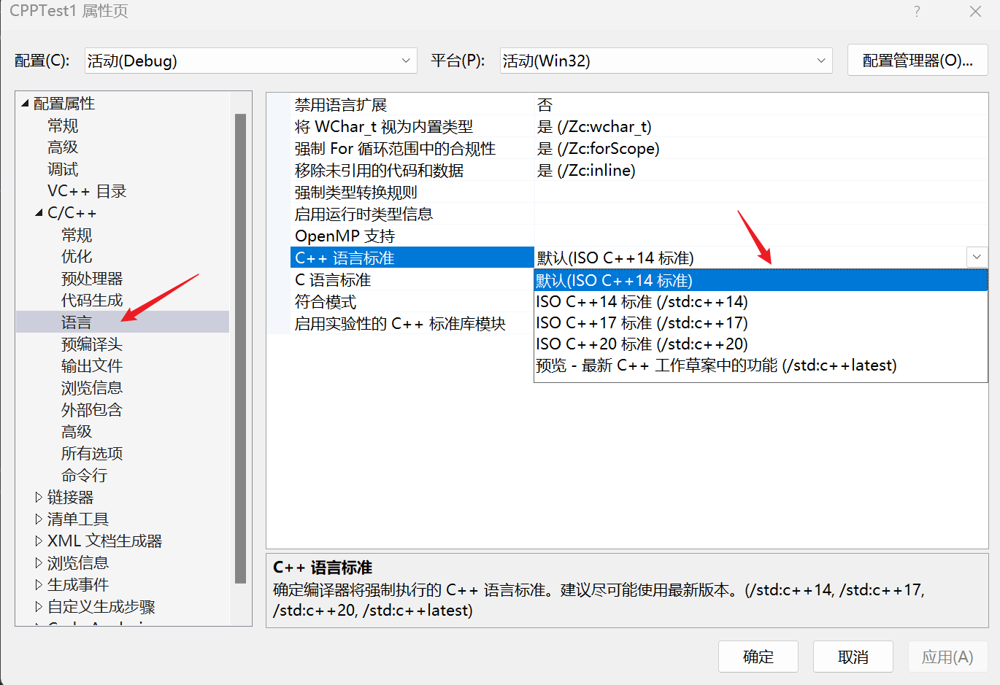

引用变量
- 左值：一般情况下拥有特定内存，并且声明周期较长的称为左值。
- 右值：一般生命周期较短且临时存在的就称为右值。如：函数的运行结果或表达式中间变量。
- 左值可以放在赋值号
= 的左右两边，右值只能放在赋值号= 的右边。 - 变量可以是左值，也可以为右值，但常量只能是右值。
- 右值只能被
const 类型的引用所指向；而左值可以被const 或 非 const 类型引用指向。 - 一般右值是不能取地址的
& - 字符串是左值
引用
- 左值引用
& - 右值引用
&& 万能引用
#include <iostream> #include <Windows.h> using namespace std; template <typename T> T foo(T && i) { cout << i << endl; return 0; } int main() { foo(123); system("pause"); return 0; }
完美转发
#include <iostream>
#include <Windows.h>
using namespace std;
template <typename T>
void foo(T i) {
cout << i << endl;
}
template <typename T>
void foo_forwarding(T && i) { // const T & i，也是可以传递右值引用的，但是那样就不能修改它的值了
foo(i);
foo(static_cast<T&&>(i)); // 和下面标准库提供的函数是一样的
foo(std::forward<T>(i));
}
int main() {
foo_forwarding(123);
system("pause");
return 0;
}
Lambda 函数与表达式
C++11 提供了对匿名函数的支持,称为 Lambda 函数(也叫 Lambda 表达式)。
Lambda 表达式把函数看作对象。Lambda 表达式可以像对象一样使用，比如可以将它们赋给变量和作为参数传递，还可以像函数一样对其求值。
Lambda 表达式本质上与函数声明非常类似。
[capture](parameters)->return-type{body}
// [capture] 捕获列表
// parameters 参数，形参
// -> return-type 不就是函数返回类型后置吗
// body 代码块
如果 lambda 函数没有传回值（例如 void），其返回类型可被完全忽略。
在 Lambda 表达式内可以访问当前作用域的变量，这是 Lambda 表达式的闭包（Closure）行为。 与 JavaScript 闭包不同，C++ 变量传递有传值和传引用的区别。可以通过前面的
[] 来指定：
[] // 沒有定义任何变量。使用未定义变量会引发错误。
[x, &y] // x 以传值方式传入（默认），y 以引用方式传入。
[&] // 任何被使用到的外部变量都隐式地以引用方式加以引用。
[=] // 任何被使用到的外部变量都隐式地以传值方式加以引用。
[&, x] // x 显式地以传值方式加以引用。其余变量以引用方式加以引用。
[=, &z] // z 显式地以引用方式加以引用。其余变量以传值方式加以引用。
另外有一点需要注意。对于
[=] 或[&] 的形式，lambda 表达式可以直接使用 this 指针。但是，对于[] 的形式，如果要使用 this 指针，必须显式传入：
[this]() { this->someFunc(); }();
#include <iostream>
#include <Windows.h>
using namespace std;
int main() {
int x = 2;
int y = 3;
// func 相当于函数指针
auto func = [x, &y](int a, int b)->int {
//x += 1; 会报错，表达式必须是可修改的左值
y += 1;
return x * y + a + b; };
cout << func(4, 5) << endl; // 2 * 4 + 4 + 5
cout << "y: " << y << endl;
auto func1 = [](auto aValue) {return aValue;};
cout << func1("hello lambda~") << endl;
system("pause");
return 0;
}
断言
assert 事实上，它居然是个宏，并且作用并非"报错"。
在经过对其进行一定了解之后，对其作用及用法有了一定的了解，assert() 的用法像是一种"契约式编程"。
- 在函数开始处检验传入参数的合法性
- 每个 assert 只检验一个条件，因为同时检验多个条件时,如果断言失败,无法直观的判断是哪个条件失败
- 不能使用改变环境的语句，因为 assert 只在 DEBUG 个生效，如果这么做，会使用程序在真正运行时遇到问题
- assert 和后面的语句应空一行，以形成逻辑和视觉上的一致感
- 有的地方，assert 不能代替条件过滤
运行时断言
#include <iostream>
#include <cassert>
using namespace std;
int main() {
char* szBuffer = nullptr;
assert(szBuffer != nullptr);
system("pause");
return 0;
}
编译期断言
#include <iostream>
#include <cassert>
#define FLAG 0;
using namespace std;
int main() {
static_assert(FLAG != 0);
system("pause");
return 0;
}
tuple 元组
#include <iostream>
#include <Windows.h>
#include <cassert>
using namespace std;
std::tuple<int, double, std::string> test() {
return std::make_tuple(12, 7.5, "hello tuple");
}
int main() {
auto [x, y, z] = test();
cout << x << endl;
cout << y << endl;
cout << z << endl;
system("pause");
return 0;
}
别名
类型别名，别名模板 (C++11 起) - cppreference.com
类型别名是指代【先前定义的类型】的名字（与 typedef 类似）。
别名模版是指代一族类型的名字。
using identifier attr(optional) = type-id ;
template < template-parameter-list >
using identifier attr(optional) = type-id ;
----------
attr - optional sequence of any number of attributes
identifier - the name that is introduced by this declaration, which becomes either a type name (1) or a template name (2)
template-parameter-list - template parameter list, as in template declaration
type-id - abstract declarator or any other valid type-id (which may introduce a new type, as noted in type-id). The type-id cannot directly or indirectly refer to identifier. Note that the point of declaration of the identifier is at the semicolon following type-id.
e.g
template<class T>
struct Alloc { };
template<class T>
using Vec = vector<T, Alloc<T>>; // type-id is vector<T, Alloc<T>>
Vec<int> v; // Vec<int> is the same as vector<int, Alloc<int>>
typedef unsigned int uint_t;
// 被重定义的类型并不是一个新的类型，仅仅只是原有的类型取了一个新的名字。
// 重定义 unsigned int
typedef unsigned int uint_t;
using uint_t = unsigned int;
// 重定义 std::map
typedef std::map<std::string, int> map_int_t;
using map_int_t = std::map<std::string, int>;
//在重定义普通类型上，两种使用方法的效果是等价的，唯一不同的是定义语法。
----------
/* C++98/03 */
template <typename T>
struct func_t {
typedef void (*type)(T, T);
};
// 使用 func_t 模板
func_t<int>::type xx_1;
/* C++11 */
template <typename T>
using func_t = void (*)(T, T);
// 使用 func_t 模板
func_t<int> xx_2;
从示例中可以看出，通过 using 定义模板别名的语法，只是在普通类型别名语法的基础上增加 template 的参数列表。使用 using 可以轻松地创建一个新的模板别名，而不需要像 C++98/03 那样使用烦琐的外敷模板。
---------- 函数指针举例
typedef void (*p_fptr)(int); // 定义一个函数指针 p_fptr
等价于
using fn = void(*)(int) // fn == p_fptr
可以称之为模板别名
---------- 使用 using 给模板起别名
template <typename T>
using type_t = T;
// ...
type_t<int> i;
// type_t 实例化后的类型和它的模板参数类型等价。这里，type_t<int> 将等价于 int。
----------
#include <iostream>
#include <map>
using namespace std;
template <typename T>
using int_map = std::map(int, T); // int_map == std::map(int, T)
int main() {
int_map<string> ins;
system("pause");
return 0;
}
SHE 异常
#include <iostream>
#include <excpt.h>
using namespace std;
int main() {
__try {
int x = 100;
int y = 0;
x = x / y;
}
__except (EXCEPTION_EXECUTE_HANDLER) {
cout << "除数不能为 0" << endl;
}
system("pause");
return 0;
}
其他
修改编译器 C++ 版本

- if/switch 中的 init-statement 【待初始化的判断条件】需要 C++ 17 后才支持。【错误 C2429】